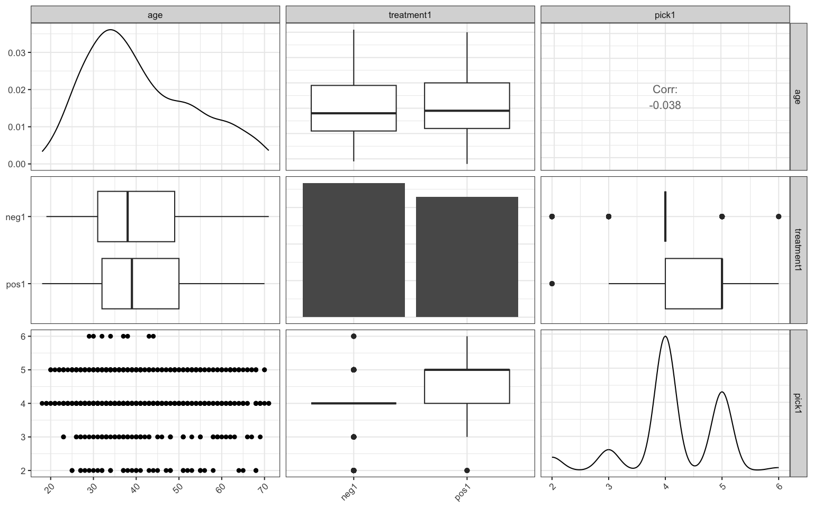
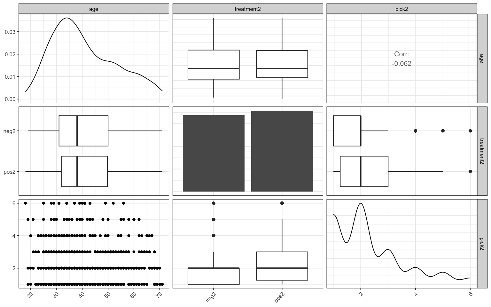
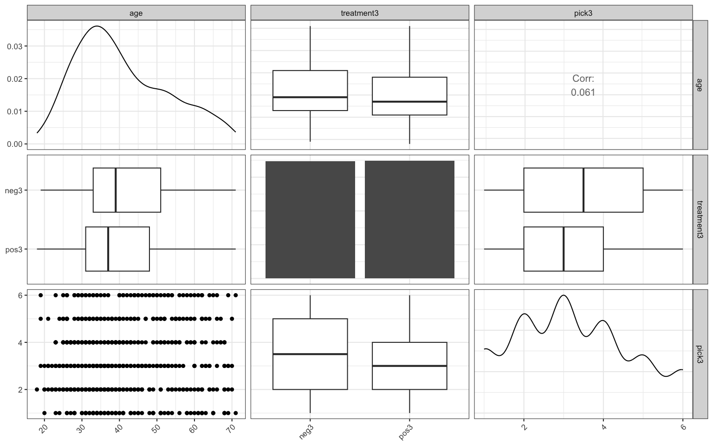
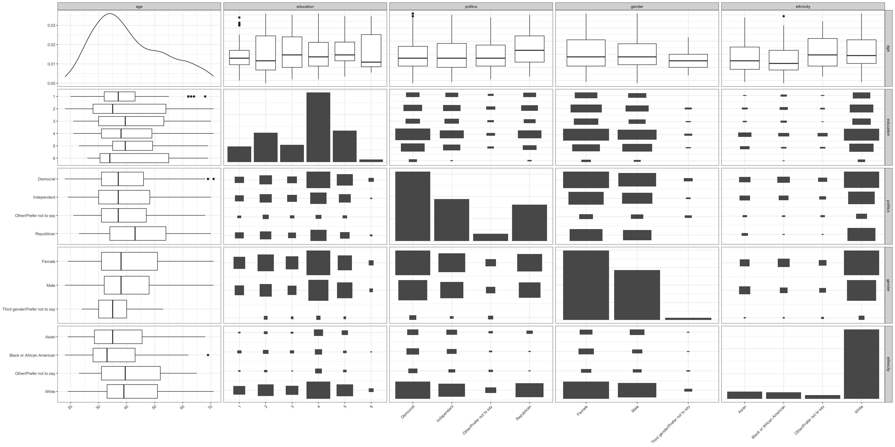
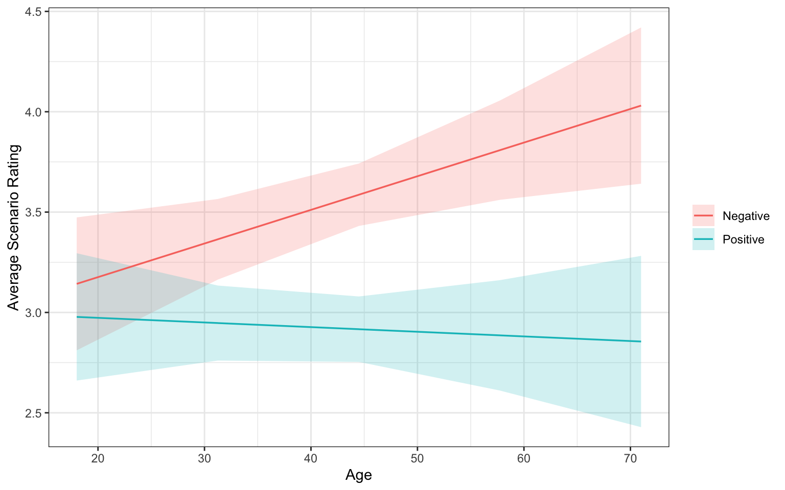

Homework 4 – Regression Consult
When people make decisions, their choices are often swayed by how information is presented. This is often described as “the framing effect.” One example of this, is how commercials describe new medications. As an example, Nereus (tradipitant), a new drug for motion-induced vomiting like sea-sickness, is marketed with a positive frame as reducing vomiting incidence from 44% to 18% (a reduction of 60%). This marketing makes it seem more effective than a negative frame that says just 18% of patients still experienced vomiting, even though both statements are true.
Xu (2024) aimed to evaluate whether older adults are more or less vulnerable to framing than younger adults. They collected a sample of 696 adults aged 18 to 71 and exposed them to three different scenarios
Scenario 1: Rate Drug Efficacy (1 = very bad, 6 = very good)
- Positive Frame: 70 out of 100 patients felt better
- Negative Frame: 30 out of 100 patients did not feel better
Scenario 2: Likelihood to stop drinking cocoa (1 = surely stop, 6 = surely continue)
- Positive Frame: Stopping drinking hot cocoa reduces cadmium and cancer risk.
- Negative Frame: Continuing to drink hot cocoa increases cadmium and cancer risk.
Scenario 3: Preference for chance choice (1 = surely safe option, 6 = surely risky)
- Positive Frame: Choice between 200 saved vs 1/3 chance all 600 are saved.
- Negative Frame: Choice between 400 die vs 2/3 chance all 600 die.
In each scenario, participants were randomly assigned a positive or negative frame. They rated their response on a 1-6 scale. The researchers want to build three models, one for each scenario adjusting for simultaneous linear changes in demographic variables (gender, ethnicity, education level, political affiliation).
They want to evaluate whether, as adults age, the way choices are worded have more influence on their judgments and ultimate choices. If there is a change, are those changes driven by positive or negative framings? At what age does this effect onset?
Your Goals:
- Determine the correct analysis strategy and conduct the necessary analyses.
- Hint 1: Ensure to assess and communicate results about the model fit.
- Hint 2: Ensure to think about whether or which interactions need to be included.
- Hint 3: You will need run various post hoc procedures (e.g.,
emmeans,emtrendsorjohnson_neyman). - Hint 4: Looking at the paper may be helpful. They do include
Rcode, but I expect you to do a much better job using the techniques we discussed (they do somethings differently)
- Write a clear, concise, complete, and correct report conveying an answer to their research question.
The data are in HW4Data.csv but they will require some manual and tidyverse cleaning.
1 Loading and Cleaning the Data
Solution
Xu (2024) stated in the paper that they already removed 153 participants who did not pass the attention check and 1 response with mismatched age, leaving us with 696 respondents (out of 850 that initially responded). I transformed the categorical variable education to ordinal, and since “Less than high school” only has 2 responses, I collapsed it with “High school graduate” to become “1”. Similarly, I collapse the levels with not a lot of responses in gender, ethnicity and politics. Age is centered.
Code
dat = dat |>
select(age, gender, politics, ethnicity, education,
treatment1, treatment2, treatment3,
pick1, pick2, pick3) |>
mutate(education = case_when(education == "Less than high school" ~ "1",
education == "High school graduate" ~ "1",
education == "Some college" ~ "2",
education == "2 year degree" ~ "3",
education == "4 year degree" ~ "4",
education == "Professional degree" ~ "5",
education == "Doctorate" ~ "6",
TRUE ~ education)) |>
mutate(gender = case_when(gender == "Non-binary / third gender" ~ "Third gender/Prefer not to say",
gender == "Prefer not to say" ~ "Third gender/Prefer not to say",
TRUE ~ gender)) |>
mutate(ethnicity = case_when(ethnicity == "American Indian or Alaska Native" ~ "Other/Prefer not to say",
ethnicity == "Native Hawaiian or Pacific Islander" ~ "Other/Prefer not to say",
ethnicity == "Other" ~ "Other/Prefer not to say",
ethnicity == "Prefer not to say" ~ "Other/Prefer not to say",
TRUE ~ ethnicity)) |>
mutate(politics = case_when(politics == "Prefer not to say" ~ "Other/Prefer not to say",
politics == "Something else" ~ "Other/Prefer not to say",
TRUE ~ politics)) |>
mutate(age_c = age - mean(age, na.rm = TRUE))2 Exploratory Data Analyses
Solution
Figure 1, Figure 2 and Figure 3 demonstrate that age is approximately normally distributed. The distribution is right-skewed, peaking around 30, showing that our sample comprises of mostly young and middle-age people. The treatment groups are roughly equal in size in all 3 experiments.
The correlation between average scenario rating (i.e., pick) and age is not significant, but this doesn’t rule out the possibility of the effect of the Treatment \(\times\) Age interaction.
Looking at Figure 4, we see that an overwhelming majority of our sample are White. The sample consists of more female than male. A majority have high education level (4-year-degree or more), and identify as democrats or independent. The sample is therefore not quite representative of the general population that the study targets.
Code

Code

Code

Code
ggpairs(dat,
columns = c("age", "education", "politics", "gender", "ethnicity"),
lower = list(combo = "box_no_facet", discrete = "count"),
upper = list(combo = "box_no_facet", discrete = "count"),
diag = list(discrete = "barDiag")) +
theme_bw(base_size = 8) +
theme(axis.text.x = element_text(angle = 45, hjust = 1)) 
3 Regression Analyses
3.1 Rating Drug Efficacy
Solution
First, we fit the regression model, then conduct residual and outlier analysis and multicolinearity check to make sure the conditions for use are met.
According to Figure 5, our residuals follow an approximate normal distribution, are centered around 0, and have common variance. The reason why we see multiple peaks in the qq plot and stripes in the fitted values vs residual plot is because the response is from a 6-point Likert scale. For example, one of the stripe can be written as: \[Residual = 6 - \hat{Y}\] According to Figure 6, we have many observations with high leverage, but Cook’s \(D\) graph shows that they’re not all influential. A few outliers can be identified from the Studentized Residuals and DFFITs graphs. Table 1 indicates that there’s no multicolinearity. Overall, our data meets the conditions for use of regression.
The model discernibly explains the variation in the outcome, \(F_{16, 679}=10.41, p<0.001, \omega^2=0.18\), see Table 2. This effect size is medium.
Table 3 shows that the effect of treatment is statistically discernible, \(F_{1, 679}=141.65, p<0.001\), but the effect of the interaction between treatment and age is not, \(F_{1, 679}=3.17, p=0.08\).
3.1.1 Fit the model
3.1.2 Residual and outlier analysis
3.1.3 Multicolinearity check
| GVIF | Df | GVIF^(1/(2*Df)) | |
|---|---|---|---|
| treatment1 | 1.0254 | 1 | 1.0126 |
| age_c | 1.8712 | 1 | 1.3679 |
| gender | 1.0810 | 2 | 1.0197 |
| ethnicity | 1.1281 | 3 | 1.0203 |
| education | 1.1406 | 5 | 1.0132 |
| politics | 1.1763 | 3 | 1.0274 |
| treatment1:age_c | 1.8637 | 1 | 1.3652 |
3.1.4 Overall \(F\)-test
| F | df1 | df2 | p | omega2 |
|---|---|---|---|---|
| 10.4059 | 16 | 679 | 0 | 0.1778 |
| Df | Sum Sq | Mean Sq | F value | Pr(>F) | |
|---|---|---|---|---|---|
| treatment1 | 1 | 74.0112 | 74.0112 | 141.6525 | 0.0000 |
| age_c | 1 | 0.9116 | 0.9116 | 1.7448 | 0.1870 |
| gender | 2 | 0.5900 | 0.2950 | 0.5647 | 0.5688 |
| ethnicity | 3 | 4.2377 | 1.4126 | 2.7036 | 0.0446 |
| education | 5 | 3.9259 | 0.7852 | 1.5028 | 0.1867 |
| politics | 3 | 1.6551 | 0.5517 | 1.0559 | 0.3672 |
| treatment1:age_c | 1 | 1.6588 | 1.6588 | 3.1749 | 0.0752 |
| Residuals | 679 | 354.7668 | 0.5225 | NA | NA |
3.2 Likelihood to Stop Drinking Cocoa
First, we fit the model. A residual analysis, as in Figure 7, reveals that while the residuals are approximately normal, there are more positive than negative residuals. I performed a log transformation to fix this problem, shown in Figure 8. Here, although the points towards the left tail are still off the qq line and we have more residuals above 0 than below, the data is now more centered around 0.
Figure 9 reveals 2 or 3 observations that both have high leverage and are influential (DFFITs). However, Studentized Residual and Cook’s \(D\) plots shows that they are only moderate outliers. Table 4 shows that there is no significant multicolinearity. The conditions for use of regression are generally met.
The model discernibly explains the variation in the outcome, \(F_{16, 679}=2.86, p<0.001, \omega^2=0.04\). The overall effect size is small.
Results are for \(log(rating)\). Table 6 shows that the effect of treatment is statistically discernible, \(F_{1, 679}=26.71, p<0.001\), but the effect of the interaction between treatment and age is not, \(F_{1, 679}=3.32, p=0.070\).
3.2.1 Fit the model
3.2.2 Residual and outlier analysis
3.2.3 Log transformation
3.2.4 Multicolinearity check
| GVIF | Df | GVIF^(1/(2*Df)) | |
|---|---|---|---|
| treatment2 | 1.0262 | 1 | 1.0130 |
| age_c | 2.0627 | 1 | 1.4362 |
| gender | 1.0794 | 2 | 1.0193 |
| ethnicity | 1.1293 | 3 | 1.0205 |
| education | 1.1497 | 5 | 1.0140 |
| politics | 1.1645 | 3 | 1.0257 |
| treatment2:age_c | 2.0407 | 1 | 1.4285 |
3.2.5 Overall \(F\)-test
| F | df1 | df2 | p | omega2 |
|---|---|---|---|---|
| 2.8615 | 16 | 679 | 2e-04 | 0.041 |
| Df | Sum Sq | Mean Sq | F value | Pr(>F) | |
|---|---|---|---|---|---|
| treatment2 | 1 | 7.5481 | 7.5481 | 26.7108 | 0.0000 |
| age_c | 1 | 0.9126 | 0.9126 | 3.2294 | 0.0728 |
| gender | 2 | 0.5009 | 0.2504 | 0.8863 | 0.4127 |
| ethnicity | 3 | 0.5896 | 0.1965 | 0.6954 | 0.5550 |
| education | 5 | 2.0671 | 0.4134 | 1.4630 | 0.1998 |
| politics | 3 | 0.3830 | 0.1277 | 0.4518 | 0.7161 |
| treatment2:age_c | 1 | 0.9368 | 0.9368 | 3.3152 | 0.0691 |
| Residuals | 679 | 191.8754 | 0.2826 | NA | NA |
For a term with 2 level or a continuous predictor, the \(t\)-test and \(F\)-test both test \(H_0: \beta_j=0\) For ethnicity, there are 3 dummy coefficients. \(t\)-test compare each category to the reference group, whereas \(F\)-test tests whether at least 1 of the coefficient is different from 0.
3.3 Preference for Chance Choice
Solution
First, we fit the model. The residual analysis in Figure 10 shows that the residuals follow an approximate Gaussian distribution, are centered around 0, and have roughly common variance. Cook’s \(D\) and Studentized Residual plots in Figure 11 confirm that there are no strongly influential points in our dataset. The multicolinearity check in Table 7 demonstrates that there is no significant multicolinearity. The conditions of use for regression are met.
The model discernibly explains the variation in the outcome, \(F_{16, 678}=4.07, p<0.001, \omega^2=0.07\). The effect size is small.
Table 9 shows that the effect of treatment is statistically discernible, \(F_{1, 678}=37.19, p<0.001\), and the interaction effect of Treatment \(\times\) Age is also statistically significant, \(F_{1, 678}=4.53, p=0.034\).
We calculate the estimated marginal trends (EMT) to understand which group drives the interaction effect. Table 11 reveals that the slope of age vs. rating is only statistically discernible for the Negative Framing condition, since the confidence interval of the slope of age vs. rating (i.e., how much the rating changes per 1-unit increase in age) in the Positive Framing condition does include 0.
A Johnson-Neyman analysis shows the effect of treatment at each age and highlights at which age(s) this effect is statistically discernible. Particularly, Figure 13 tells us what the slope of the treatment term is at each age (i.e., how much the rating changes per 1-unit increase in treatment at each age). Since the treatment only has 2 levels, a 1-unit increase means a change in framing (positive to negative). The framing difference (negative - positive) is statistically discernible from about age 27 onward.
3.3.1 Fit the model
There is 1 NA in this column, which lm() automatically drops.
3.3.2 Residual and outlier analysis
3.3.3 Multicolinearity check
| GVIF | Df | GVIF^(1/(2*Df)) | |
|---|---|---|---|
| treatment3 | 1.0296 | 1 | 1.0147 |
| age_c | 2.0203 | 1 | 1.4214 |
| gender | 1.0826 | 2 | 1.0200 |
| ethnicity | 1.1321 | 3 | 1.0209 |
| education | 1.1300 | 5 | 1.0123 |
| politics | 1.1845 | 3 | 1.0286 |
| treatment3:age_c | 2.0114 | 1 | 1.4182 |
3.3.4 Overall \(F\)-test
| F | df1 | df2 | p | omega2 |
|---|---|---|---|---|
| 4.0744 | 16 | 678 | 0 | 0.0661 |
| Df | Sum Sq | Mean Sq | F value | Pr(>F) | |
|---|---|---|---|---|---|
| treatment3 | 1 | 76.5801 | 76.5801 | 37.1926 | 0.0000 |
| age_c | 1 | 2.8446 | 2.8446 | 1.3815 | 0.2403 |
| gender | 2 | 2.3545 | 1.1773 | 0.5718 | 0.5648 |
| ethnicity | 3 | 10.2783 | 3.4261 | 1.6640 | 0.1735 |
| education | 5 | 9.0132 | 1.8026 | 0.8755 | 0.4971 |
| politics | 3 | 23.8242 | 7.9414 | 3.8569 | 0.0094 |
| treatment3:age_c | 1 | 9.3321 | 9.3321 | 4.5323 | 0.0336 |
| Residuals | 678 | 1396.0119 | 2.0590 | NA | NA |
3.3.5 Inference about coefficients
| Estimate | Std. Error | t value | Pr(>|t|) | |
|---|---|---|---|---|
| (Intercept) | 3.4482 | 0.2860 | 12.0565 | 0.0000 |
| treatment3pos3 | -0.5999 | 0.1105 | -5.4306 | 0.0000 |
| age_c | 0.0168 | 0.0063 | 2.6739 | 0.0077 |
| genderMale | 0.1214 | 0.1133 | 1.0719 | 0.2841 |
| genderThird gender/Prefer not to say | -0.0132 | 0.4140 | -0.0318 | 0.9746 |
| ethnicityBlack or African American | 0.0915 | 0.2769 | 0.3305 | 0.7412 |
| ethnicityOther/Prefer not to say | -0.4027 | 0.3247 | -1.2403 | 0.2153 |
| ethnicityWhite | -0.2164 | 0.2017 | -1.0730 | 0.2837 |
| education2 | 0.1152 | 0.2199 | 0.5237 | 0.6007 |
| education3 | -0.1765 | 0.2461 | -0.7175 | 0.4733 |
| education4 | 0.1355 | 0.1982 | 0.6834 | 0.4946 |
| education5 | -0.1289 | 0.2206 | -0.5844 | 0.5591 |
| education6 | 0.0010 | 0.4712 | 0.0021 | 0.9983 |
| politicsIndependent | 0.4718 | 0.1352 | 3.4897 | 0.0005 |
| politicsOther/Prefer not to say | 0.1154 | 0.2698 | 0.4277 | 0.6690 |
| politicsRepublican | 0.1821 | 0.1445 | 1.2606 | 0.2079 |
| treatment3pos3:age_c | -0.0191 | 0.0090 | -2.1289 | 0.0336 |
3.3.6 Post-hoc testing
| age_c | treatment3 | age_c.trend | SE | df | lower.CL | upper.CL |
|---|---|---|---|---|---|---|
| -0.0103 | neg3 | 0.0168 | 0.0063 | 678 | 0.0045 | 0.0291 |
| -0.0103 | pos3 | -0.0023 | 0.0065 | 678 | -0.0151 | 0.0105 |
The first column, age, is the mean age of the sample (standardized), at which the trends were evaluated.
By default, emmeans averages over gender, ethnicity, education, and politics by giving every level equal weight, even levels with few people. Setting weights = "proportional" makes sure each level is weighted by how common it is in the dataset. For example, if 80% of our sample is White, then the coefficient for that level the categorical predictor is multiplied by an according weight.
Code
emm.q3 = emmeans(mod.q3, ~ treatment3 | age_c,
at = list(age_c = seq(min(dat$age_c), max(dat$age_c), length.out = 5)),
weights = "proportional")
plot.q3 = as.data.frame(emm.q3) |>
mutate(treatment3 = case_when(treatment3 == "pos3" ~ "Positive",
treatment3 == "neg3" ~ "Negative")) |>
mutate(age = age_c + mean(dat$age))
# back to real age for x-axisCode

We transform the variable treatment 3 to a discrete binary variable. \(x_1=0\) when treatment is positive, and \(x_1=1\) when treatment is negative. The regression model with the interaction term between treatment (\(x_1\)) and age (\(x_2\)) can be written as:
\[\hat{y} = \beta_0 + \beta_1x_1 + \beta_2x_2 + \beta_3x_1x_2 +C \]
or, singling out \(x_1\),
\[\hat{y} = \beta_0 + (\beta_1+\beta_3x_2)x_1 + \beta_2x_2 + C \] ANOVA tests whether \(\beta_3\) is discernibly different from 0. EMT etimates the age slope within each framing group and \(\beta_3\) is their difference. When treatment3 is negative, \(x_1=1\). \(\hat{y}\) changes by \(\beta_2+\beta_3\) with every unit change in \(x_2\). When treatment3 is positive, \(x_1=0\). \(\hat{y}\) changes by \(\beta_2\) with every unit change in \(x_2\).
The Johnson-Neyman analysis tests the slope of \(x_1\) (\(\beta_1+\beta_3x_2\)) at every value of \(x_2\). Specifically, it tests, at each age, whether the difference in predicted ratings between negative and positive framing is discernibly different from 0.
4 Discussion
There is a statistically discernible effect of framing in all three experiments, confirming previous literature.
Regarding the Age \(\times\) Framing interaction effect on participants’ perception of a scenario, in two out of three experiments, particularly attribute framing and goal framing, we did not find a statistically discernible effect.
In the risky-choice framing, however, the Age \(\times\) Framing interaction effect was statistically discernible, \(F_{1, 678} = 4.53, p = .034\), with a slope difference of 0.019 rating points per year of age (SE = 0.009). This effect has been adjusted for simultaneous linear changes in gender, ethnicity, education, and politics.
Particularly, under negative framing, ratings of the risky option rose by 0.017 points per 1-year increase in age (95% CI [0.005, 0.029]). As adults get older, they are more likely to take risk when the scenario is framed negatively. Ratings under positive framing did not change with age (−0.002 points per year, 95% CI [−0.015, 0.011]). The Johnson-Neyman analysis shows that negative framing induced higher risk-seeking than positive framing for participants older than about 27.